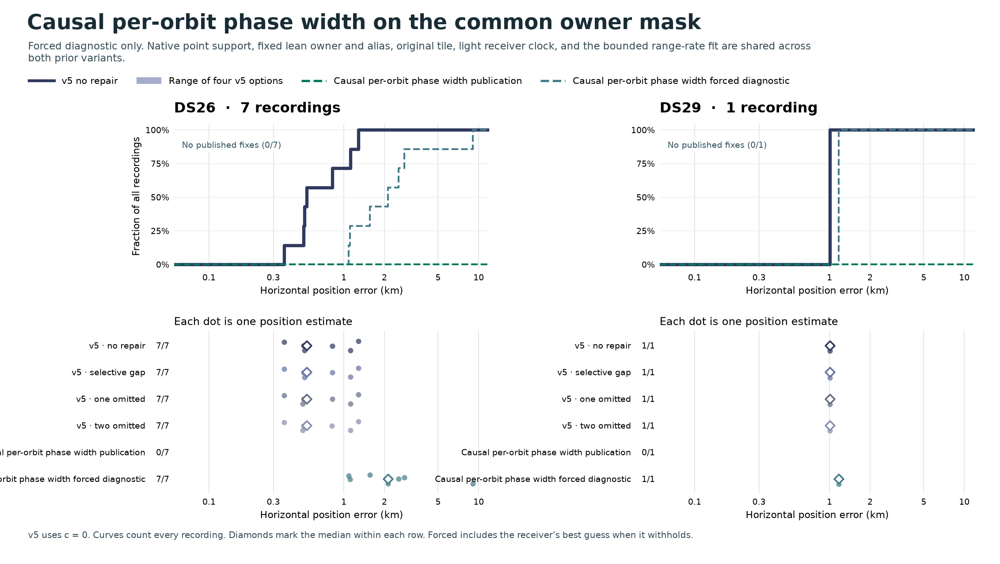
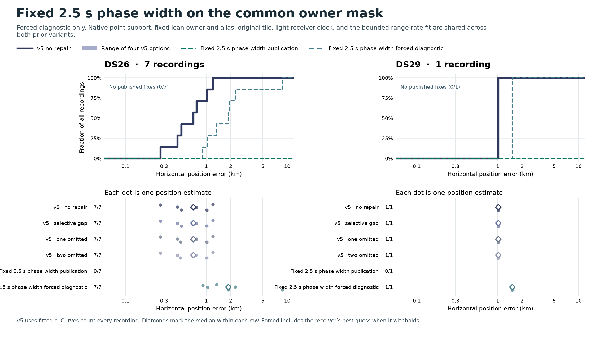

Causal per-orbit phase width on the common owner mask



Roof charts use the four original v5 choices on the named recordings. Each independent location plot uses its own measured or simulated queries. Unmeasured attempts remain visible in counts and tables.
Roof · Fitted calibration PDFRoof · Fitted calibration dataRoof · Zero calibration PDFRoof · Zero calibration data

